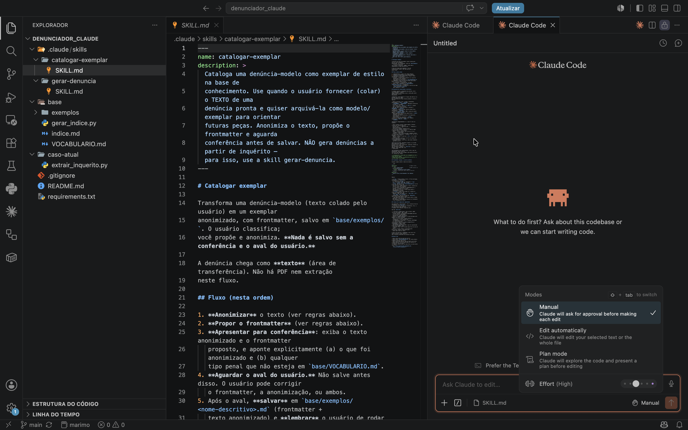
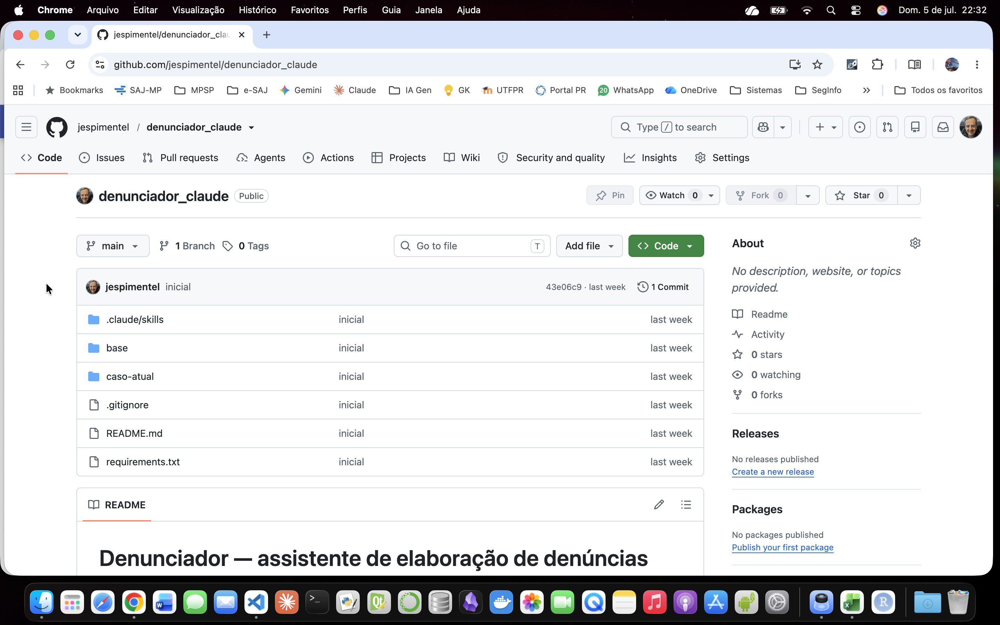

5. Claude no VS Code
Visão geral¶
A extensão oficial coloca o Claude Code dentro do VS Code, sem precisar usar o terminal. Ela aparece num painel lateral e mostra, em tempo real, as mudanças que o Claude propõe: cada alteração vem lado a lado (o texto atual e o novo), e você decide item a item se aceita, recusa ou pede um ajuste. Há dois modos de trabalho. No modo normal, o Claude pede sua confirmação a cada mudança. No modo de planejamento, ele primeiro apresenta um plano completo, que você lê e comenta antes de autorizá-lo a começar. Na prática, o Claude atua sobre os arquivos do seu projeto: lê, edita, cria pequenos programas e executa tarefas por conta própria, sempre sob seu controle. Também pode se conectar a fontes externas (como o seu Google Drive) para buscar informação enquanto trabalha. É o ambiente indicado para quem quer construir e organizar ferramentas com mais controle
Claude.ai X Cowork X VS Code (com extensão do Claude)¶
| Critério | Claude.ai | Cowork | VS Code (Extensão do Claude) |
|---|---|---|---|
| Interface | Navegador e app desktop (formato chat) | App desktop com GUI (aba dentro do Claude Desktop) | Painel integrado à IDE e terminal |
| Público-alvo | Uso geral | Não-desenvolvedores (você descreve o resultado e o Claude executa) | Desenvolvedores e usuários avançados |
| Instalação / Onde a skill vive | Na conta do usuário (upload do .zip em Customize -> Skills) | Mesma conta (sincroniza Web e Desktop) ou via plugins | Localmente no disco, no arquivo .claude/skills/ (sem upload) |
| Execução de código | Sandbox (VM) em nuvem da Anthropic | VM isolada na máquina do usuário, separada do SO | Máquina real e terminal local do usuário |
| Acesso a arquivos | Apenas arquivos da conversa e conectores ativos | Apenas pastas explicitamente autorizadas pelo usuário | Acesso direto ao filesystem do projeto aberto |
| MCP (ex. Google Drive) | Conector nativo pela interface (UI) | Conector nativo pela interface (mesmas permissões do chat) | Configurado via .mcp.json ou claude mcp add |
| Criação e otimização de skill | Via skill-creator com ciclo manual (rascunhar, rodar, revisar) | Usa skills e plugins existentes; não há ciclo de otimização | Via skill-creator, com plugin opcional que automatiza a geração e execução de casos de teste e propõe ajustes de gatilho (revisão final manual) |
| Compartilhamento | Recursos padrão de compartilhamento da conta do produto | Plugins (skills, conectores, subagentes) e tarefas agendadas | Controle de versão via Git |
| Melhor para | Redigir, resumir e iterar textos ou ideias no dia a dia | Automação de tarefas multi-etapa com arquivos locais (sem código) | Construir, testar e versionar skills e pipelines locais em Python |
Trabalhando no VS Code¶
Instalação e Configuração Inicial¶
- Instalação da Extensão:
- Abra o VS Code, vá até o menu de Extensões (
Ctrl+Shift+XouCmd+Shift+X). - Pesquise por Claude (oficial da Anthropic) e clique em Install.
- Abra o VS Code, vá até o menu de Extensões (
- Autenticação da Conta:
- Clique no ícone do Claude que apareceu na barra lateral esquerda.
- Selecione Sign In para conectar sua conta Anthropic ou insira sua chave de API nas configurações.
- Permissões de Workspace:
- Abra a pasta do seu projeto (
File > Open Folder). - O Claude solicitará permissão para ler o diretório local; autorize para ativar o contexto completo do projeto.
- Abra a pasta do seu projeto (
- Ativação do Ambiente Local:
- Abra o terminal integrado do VS Code (`Ctrl+``).
- O Claude usará este terminal para executar testes e comandos em sua máquina real sempre que você autorizar.
Criação de Skills e Execução Automatizada¶
- Utilizando o Skill Creator:
- No painel do Claude, peça para criar uma automação ou rotina usando o comando de criação.
- O assistente criará automaticamente uma pasta de skill (com o
SKILL.mde, se necessário, arquivos de apoio) dentro do diretório oculto.claude/skills/.
- Testes com apoio de subagentes:
- Com o plugin opcional
skill-creator, o Claude gera casos de teste (frases que devem ou não acionar a skill), roda-os localmente via subagentes no seu terminal e propõe ajustes nadescription. A revisão e a decisão final sobre o que muda continuam suas.
- Com o plugin opcional
- Gerenciamento de Ferramentas (MCP):
- Para conectar ferramentas externas (como o Google Drive), configure o arquivo
.mcp.jsonna raiz do projeto ou utilize o terminal com o comandoclaude mcp add.
- Para conectar ferramentas externas (como o Google Drive), configure o arquivo
- Versionamento e Compartilhamento:
- Como todas as suas skills e pipelines ficam salvos em arquivos locais no seu filesystem, basta usar o Git para commitar, versionar e compartilhar as automações com o restante da sua equipe.

Exemplo didático de um repositório no GitHub (para versionamento)¶
Acesse o repositório denunciador-claude no GitHub (criado somente para fins didáticos - não foi testado em produção)

Estrutura de um projeto com MCP no VS Code¶
denunciador/ # raiz do projeto (versionável no git)
├── .mcp.json # declara o servidor "Google Drive" (chave = prefixo da skill)
├── .claude/
│ ├── settings.json # (opcional) auto-aprova o servidor do .mcp.json
│ └── skills/
│ └── elaborar-denuncia/
│ ├── SKILL.md
│ └── references/
│ ├── template.md
│ └── exemplos.md
# Fora do repositório (não versionado):
Google Drive (externo, via MCP)
└── modelos_denuncias/
├── indice.md
└── *.md # modelos de peças
- Exemplo do arquivo .mcp.json (declara a existência de um servidor MCP)
{
"mcpServers": {
"Google Drive": {
"type": "http",
"url": "https://<endpoint-do-conector-google-drive>"
}
}
}
- Exemplo de arquivo settings.json (habilita o servidor MCP)